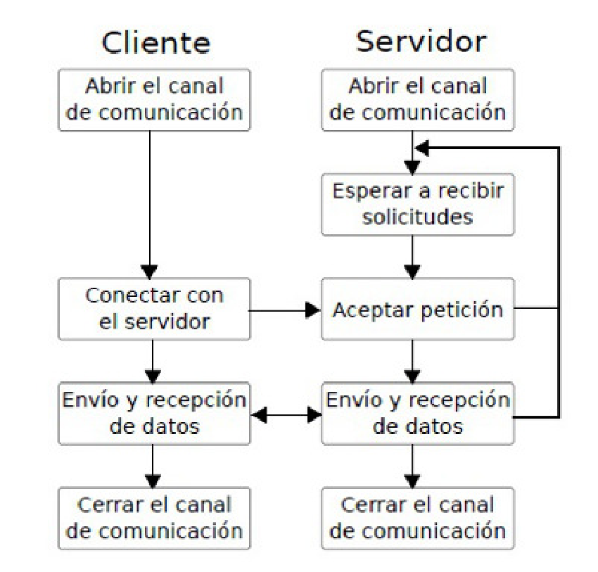

Comunicación Cliente - Servidor

1-) El Cliente, normalmente un navegador, hace una peticiónde la página que ha sido buscada al SERVIDOR WEB
2-) El Servidor Web extrae la página de php que corresponde
3-) El servidor Web procesa esta página de php, copiandola y convirtiendola en la página de HTML correspondiente
4-) En el caso de que haya que ejecutar algún script al cargar el HTML lo ejecuta, ya sea de php, javascript...
5-) Por último envía esa página de HTML al Cliente